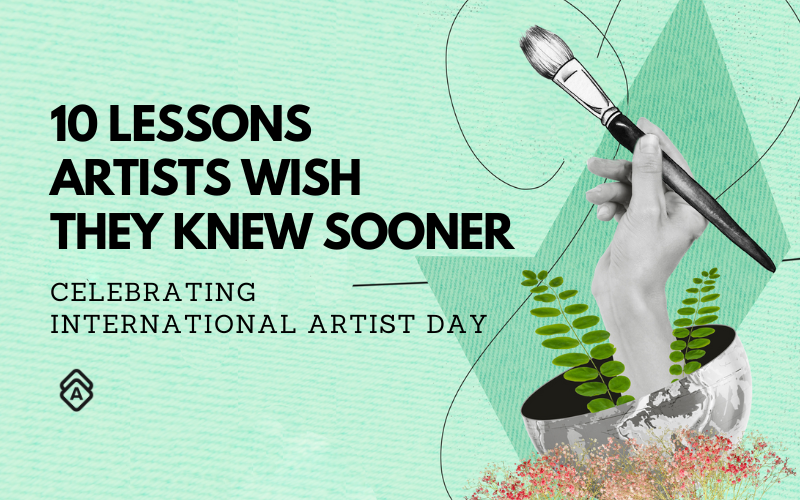

Celebrating International Artist Day: 10 Lessons Artists Wish
They Knew Sooner

Artwork Archive proudly serves artists in over 160 countries.
That’s why, to celebrate International Artist Day, we want to take a moment to highlight a few of these artists—while giving you some practical art career insights, of course.
The creative community is thriving, and there's a growing sense of unity among artists. The insights and wisdom shared by those who have experience in their art careers can help you navigate your own art journey with greater confidence.
We’ve gathered ten different lessons these professional artists wish they knew at the start of their own art careers.
Read on to hear their takeaways and get some inside knowledge that can be applied to any art career—regardless of stage.
Trust your creative vision as an artist
Your art career will ebb and flow—there might be days when you struggle to find the inspiration to step into your studio. That's perfectly okay! Trust that the creative spark will reignite.
Not everyone will understand what you're trying to express through your art, but the most important audience for your work is you. Embrace your instincts and your unique voice will shine through.
We’ve gathered ten different lessons these professional artists wish they knew at the start of their own art careers.
"Trust yourself. If you can’t get into the studio today, then you will tomorrow. If you made horrible work today, then soon this will lead to something beautiful.
You don’t need to listen to all the voices—the ones in your head or the people that don’t get what you’re trying to do—just trust yourself.
Your art has a valuable place in the world. You just need to keep on making it."
— Maryanne Hawes, Cornwall, England
"Don’t worry about what other people think of your work.
If you have a great idea, believe in yourself, stick to it, and follow it through."
— Adi Tait, Nelson Tasman , New Zealand